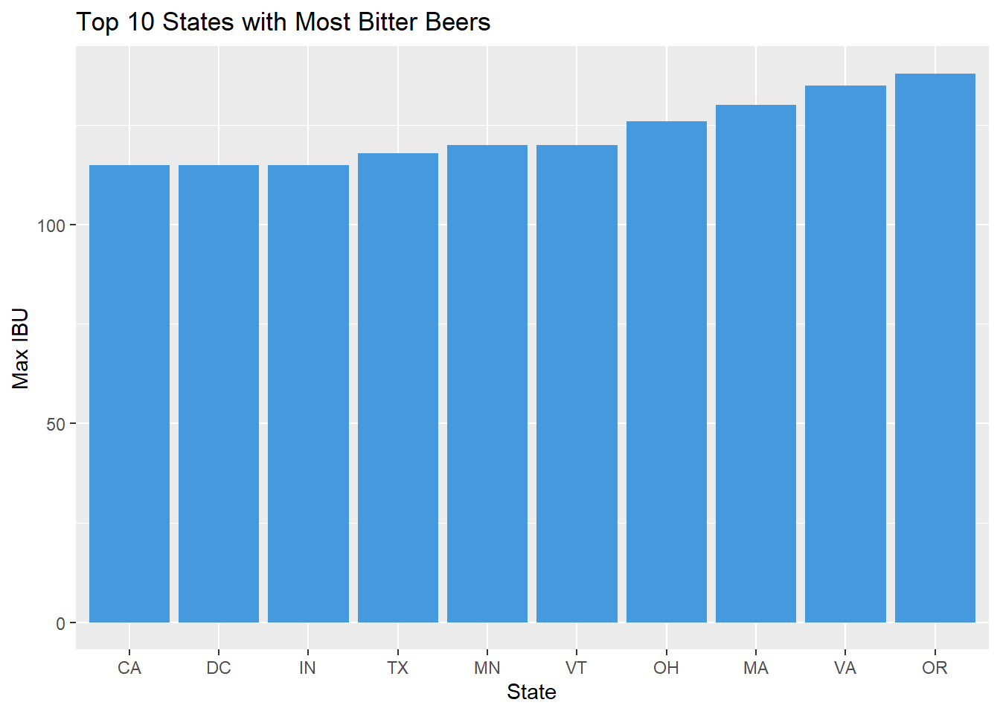

Case Study 1 - Beer and Breweries
By David Wei, Neil Benson
06/15/2020
A review and analysis of beer and breweries by state. We will review missing data and how we filled it, number of breweries by state, summary statistics like medians and means of ABV and IBU at the beer level, and finally a review of the relationship between Ales, IPAs and other types of beer.
Import File & General Libraries
We first start with importing the main libraries and then reading in files and showing first 5 lines of both beer and brewery datasets.
library(ggplot2)
library(ggthemes)
library(dplyr)
library(tidyverse)
library(forcats)
# beer <- read.csv("C:/Users/David/Google Drive/Masters/Data Files/Beers.csv")
# brew <- read.csv("C:/Users/David/Google Drive/Masters/Data Files/Breweries.csv")
beer <- read.csv("C:/Git/MSDS_6306_Doing-Data-Science/Unit 8 and 9 Case Study 1/Beers.csv")
brew <- read.csv("C:/Git/MSDS_6306_Doing-Data-Science/Unit 8 and 9 Case Study 1/Breweries.csv")Reviewing the first 5 records of beer
| Name | Beer_ID | ABV | IBU | Brewery_id | Style | Ounces |
|---|---|---|---|---|---|---|
| Pub Beer | 1436 | 0.050 | NA | 409 | American Pale Lager | 12 |
| Devil’s Cup | 2265 | 0.066 | NA | 178 | American Pale Ale (APA) | 12 |
| Rise of the Phoenix | 2264 | 0.071 | NA | 178 | American IPA | 12 |
| Sinister | 2263 | 0.090 | NA | 178 | American Double / Imperial IPA | 12 |
| Sex and Candy | 2262 | 0.075 | NA | 178 | American IPA | 12 |
Reviewing the first 5 records of brewery
| Brew_ID | Name | City | State |
|---|---|---|---|
| 1 | NorthGate Brewing | Minneapolis | MN |
| 2 | Against the Grain Brewery | Louisville | KY |
| 3 | Jack’s Abby Craft Lagers | Framingham | MA |
| 4 | Mike Hess Brewing Company | San Diego | CA |
| 5 | Fort Point Beer Company | San Francisco | CA |
Analysis #1
Once our data has been imported we can now begin our analysis starting with our first question of determing how many breweries are present in each state. After counting the number of unique breweries per state, we found that Colorado leads in having 47 breweries with three states ND, SD, WV and DC having only 1 each.
brew %>%
group_by(State) %>%
summarise(Breweries = n_distinct(Brew_ID)) %>%
mutate(State = fct_reorder(State, desc(Breweries))) %>%
ggplot(aes(x = State, y = Breweries, fill=State)) +
geom_bar(stat="identity") +
theme(legend.position = "none", axis.text.x = element_text(angle = 90, vjust = 0.5, hjust=1, size = 8)) +
ggtitle("Descending # of Breweries per State")Number of breweries per state
| State | Breweries | State | Breweries | State | Breweries | State | Breweries | State | Breweries |
|---|---|---|---|---|---|---|---|---|---|
| AK | 7 | HI | 4 | ME | 9 | NJ | 3 | SD | 1 |
| AK | 7 | HI | 4 | ME | 9 | NJ | 3 | SD | 1 |
| AL | 3 | IA | 5 | MI | 32 | NM | 4 | TN | 3 |
| AR | 2 | ID | 5 | MN | 12 | NV | 2 | TX | 28 |
| AZ | 11 | IL | 18 | MO | 9 | NY | 16 | UT | 4 |
| CA | 39 | IN | 22 | MS | 2 | OH | 15 | VA | 16 |
| CO | 47 | KS | 3 | MT | 9 | OK | 6 | VT | 10 |
| CT | 8 | KY | 4 | NC | 19 | OR | 29 | WA | 23 |
| DC | 1 | LA | 5 | ND | 1 | PA | 25 | WI | 20 |
| DE | 2 | MA | 23 | NE | 5 | RI | 5 | WV | 1 |
| FL | 15 | MD | 7 | NH | 3 | SC | 4 | WY | 4 |
| GA | 7 |
Analysis #2
After the beer and brewery files have been loaded in as dataframes, we then joined, renamed and re-arranged the 2 datasets together to create a single tidy source of data for ease of use. Output of final dataset provided below.
library(stringr)
## Data Tidying
# left join brew into beer based on brew_id, then renaming and ordering columns
beer_df <- merge(x=beer, y=brew, by.x="Brewery_id", by.y="Brew_ID", all.x=TRUE) %>%
plyr::rename(c("Ounces"="Oz", "Brewery_id"="Brewery_ID", "Name.x"="Beer_Name","Name.y"="Brewery_Name"))
# reording the columns
beer_df <- beer_df[c(1,8,3,2,9,10,4,5,6,7)]
# trimming leading and tailing spaces
beer_df$State <- str_trim(beer_df$State,side="both")Reviewing the first 5 records after join
| Brewery_ID | Brewery_Name | Beer_ID | Beer_Name | City | State | ABV | IBU | Style | Oz |
|---|---|---|---|---|---|---|---|---|---|
| 1 | NorthGate Brewing | 2692 | Get Together | Minneapolis | MN | 0.045 | 50 | American IPA | 16 |
| 1 | NorthGate Brewing | 2691 | Maggie’s Leap | Minneapolis | MN | 0.049 | 26 | Milk / Sweet Stout | 16 |
| 1 | NorthGate Brewing | 2690 | Wall’s End | Minneapolis | MN | 0.048 | 19 | English Brown Ale | 16 |
| 1 | NorthGate Brewing | 2689 | Pumpion | Minneapolis | MN | 0.060 | 38 | Pumpkin Ale | 16 |
| 1 | NorthGate Brewing | 2688 | Stronghold | Minneapolis | MN | 0.060 | 25 | American Porter | 16 |
Reviewing the last 5 records after join
| Brewery_ID | Brewery_Name | Beer_ID | Beer_Name | City | State | ABV | IBU | Style | Oz |
|---|---|---|---|---|---|---|---|---|---|
| 557 | Butternuts Beer and Ale | 52 | Heinnieweisse Weissebier | Garrattsville | NY | 0.049 | NA | Hefeweizen | 12 |
| 557 | Butternuts Beer and Ale | 51 | Snapperhead IPA | Garrattsville | NY | 0.068 | NA | American IPA | 12 |
| 557 | Butternuts Beer and Ale | 50 | Moo Thunder Stout | Garrattsville | NY | 0.049 | NA | Milk / Sweet Stout | 12 |
| 557 | Butternuts Beer and Ale | 49 | Porkslap Pale Ale | Garrattsville | NY | 0.043 | NA | American Pale Ale (APA) | 12 |
| 558 | Sleeping Lady Brewing Company | 30 | Urban Wilderness Pale Ale | Anchorage | AK | 0.049 | NA | English Pale Ale | 12 |
Analysis #3
Addressing missing values in each column, we found that almost half (~42%) of IBU data was missing, and a little over 2.5% of AV data was missing. Imputation was applied to correct the missing data, however, we found that impuation actually underfitted the data values for IBU and ABV and so we added an additional layer of logic to the imputation by applying means of IBU and ABV per style of beer to provide higher accuracy.
library(naniar)
library(corrplot)
library(imputeTS)
# checking for empty data
vis_miss(beer_df) + xlab("Data Columns")# get all non NA for ABV and IBU to calculate mean
abv = beer_df[!is.na(beer_df$ABV),]
ibu = beer_df[!is.na(beer_df$IBU),]
# get mean ABV and IBU by style
beer_mean_ABV <<- abv %>%
group_by(Style) %>%
summarize(mean_ABV = round(mean(ABV),3))
beer_mean_IBU <<- ibu %>%
group_by(Style) %>%
summarize(mean_IBU = round(mean(IBU),0))
# fill in missing values for IBU where style has no recorded IBU
Style <- c('American Malt Liquor','Braggot','Cider','Flanders Red Ale','Kristalweizen','Low Alcohol Beer','Mead','Rauchbier','Shandy')
mean_IBU <- c(20, 30, 0, 20, 12.5, 15, 1.66, 25, 10.208)
IBU_missing <- data.frame(Style, mean_IBU)
beer_mean_IBU <- rbind(beer_mean_IBU,IBU_missing)
# left join IBU and ABV mean values by style
mean_abv_ibu <- merge(x=beer_mean_ABV, y=beer_mean_IBU, by.x="Style", by.y="Style", all.x=TRUE)
# function to impute mean for ABV and IBU based on means of style
naMeanFill <- function (Style, Column, Colname) {
if ( Colname == 'ABV')
{
mean = mean_abv_ibu$mean_ABV[ mean_abv_ibu$Style == Style]
}
else
{
mean = mean_abv_ibu$mean_IBU[ mean_abv_ibu$Style == Style]
}
Column[is.na(Column)] <- mean
return(Column)
}
# vectorize the function
naMeanFill_v <- Vectorize(naMeanFill)
# fill-in NAs for ABV and IBU
beer_df$ABV <-naMeanFill_v(beer_df$Style,beer_df$ABV,'ABV')
beer_df$IBU <-naMeanFill_v(beer_df$Style,beer_df$IBU,'IBU')
beer_df$IBU <- as.integer(beer_df$IBU)
# imputating NA values with the mean
beer_df_cleaned <- beer_df
vis_miss(beer_df_cleaned) + xlab("Data Columns")
Address the missing values in each column
IBU missing 41.7% of data
ABV missing 2.57% of data
All other data noted as complete
Missing data was filled in using the average ABV and average IBU by beer style
Analysis #4
The Median alcohol content (ABV) and international bitterness unit (IBU) for each state was looked into by scaling the ABU and IBU coefficients at a comparitive level due to how different each unit of measurement is. Additionally, we individually plotted the mean measurements per state and found that most beers fell within relative range of each other with only a handful of states significantly differing from the rest.
# creating logic column as calculation of medians and storing each as seperate dfs
ABV_summary <- beer_df_cleaned %>% group_by(State) %>% summarise(Median_ABV=median(ABV), Max_ABV=max(ABV), Mean_ABV=mean(ABV)) %>% as.data.frame()
IBU_summary <- beer_df_cleaned %>% group_by(State) %>% summarise(Median_IBU=median(IBU), Max_IBU=max(IBU), Mean_IBU=mean(IBU)) %>% as.data.frame()
# joining the 2 dfs
summary_df <- merge(x=ABV_summary, y=IBU_summary, by="State", all=TRUE)
# scaling ABV and IBU for easier comparison
summary_df$median_ABV.scaled = scale(summary_df$Median_ABV)
summary_df$median_IBU.scaled = scale(summary_df$Median_IBU)
summary_df$max_ABV.scaled= scale(summary_df$Max_ABV)
summary_df$max_IBU.scaled = scale(summary_df$Max_IBU)Reviewing the first 5 records of summary_df
| State | Median_ABV | Max_ABV | Median_IBU | Max_IBU | median_ABV.scaled | median_IBU.scaled | max_ABV.scaled | max_IBU.scaled |
|---|---|---|---|---|---|---|---|---|
| AK | 0.056 | 0.068 | 34.0 | 71 | 0.006867089 | 0.02227067 | -1.4023857 | -1.1581394 |
| AL | 0.060 | 0.093 | 39.5 | 103 | 0.940791179 | 0.71637307 | 0.2702446 | 0.4235204 |
| AR | 0.052 | 0.061 | 36.0 | 46 | -0.927057001 | 0.27467154 | -1.8707222 | -2.3938111 |
| AZ | 0.057 | 0.095 | 22.0 | 99 | 0.240348111 | 0.77947329 | 0.6716758 | 1.0166429 |
| CA | 0.058 | 0.099 | 40.0 | 115 | 0.473829134 | -1.49213459 | 0.4040550 | 0.2258130 |
#comparing median ABV vs IBU per state
library(reshape)
summary_df_pivot <- melt(summary_df)
summary_df_pivot %>% filter(variable=="median_ABV.scaled" | variable=="median_IBU.scaled") %>%
# mutate(State = fct_reorder(State, desc(distinct_breweries))) %>%
ggplot(aes(State,value,fill=variable)) +
theme(legend.position = "none", axis.text.x = element_text(angle = 90, vjust = 0.5, hjust=1, size = 8)) +
geom_bar(stat="identity", position="dodge") +
labs(y="Scale", title="Comparison of Median ABV vs IBU per State")# comparing median ABV per state
summary_df %>% arrange(desc(Median_ABV)) %>%
mutate(State=fct_reorder(State, Median_ABV)) %>%
ggplot(aes(State, Median_ABV,fill=State)) +
geom_bar(stat="identity", position="dodge", fill="#F8766D") +
theme(legend.position = "none", axis.text.x = element_text(angle = 90, vjust = 0.5, hjust=1, size = 8)) +
scale_y_continuous("Med ABV (%)",label=scales::percent) +
labs(title="Median ABV per State")# comparing median IBU per state
summary_df %>% arrange(desc(Median_IBU)) %>%
mutate(State=fct_reorder(State, Median_IBU)) %>%
ggplot(aes(State, Median_IBU,fill=State)) +
geom_bar(stat="identity", position="dodge",fill="#00BFC4") +
theme(legend.position = "none", axis.text.x = element_text(angle = 90, vjust = 0.5, hjust=1, size = 8))+
labs(title="Median IBU per State")Analysis #5
We next examined which state has the most alcoholic (ABV) most bitter (IBU) beer. We found that Colorado has the most alcoholic beers while Oregon had the most bitter. Both of which are in the top 5 for number of breweries and top 6 for breweries per capita.
## comparing ABV vs IBU max
# myColors <- c("#7CAE00", "#C77CFF")
myColors <- c("#56ddc5", "#4699dd")
summary_df_pivot %>% filter(variable=="max_ABV.scaled" | variable=="max_IBU.scaled") %>%
ggplot(aes(State,value,fill=variable)) +
theme(legend.position = "none", axis.text.x = element_text(angle = 90, vjust = 0.5, hjust=1, size = 8)) +
geom_bar(stat="identity", position="dodge") +
scale_fill_manual(values=myColors) +
labs(y="Scale", title="Comparison of Max ABV vs IBU per State")# comparing ABV per state
summary_df %>% arrange(desc(Max_ABV)) %>% mutate(State=fct_reorder(State, Max_ABV)) %>% slice(1:10) %>%
ggplot(aes(State, Max_ABV,fill=State)) + geom_bar(stat="identity", position="dodge",fill="#56ddc5") + theme(legend.position="none") +
scale_y_continuous("Max ABV (%)",label=scales::percent) + labs(title="Top 10 States with Most Alcoholic Beers")# comparing IBU per state
summary_df %>% arrange(desc(Max_IBU)) %>% mutate(State=fct_reorder(State, Max_IBU)) %>% slice(1:10) %>%
ggplot(aes(State, Max_IBU,fill=State)) + geom_bar(stat="identity", position="dodge",fill="#4699dd") +
ylab("Max IBU") + theme(legend.position="none") + labs(title="Top 10 States with Most Bitter Beers")
Analysis #6
Another aspect of the beer’s ABV we looked-into was the distribution and general statistics of ABV across all beers. Here we found that most of the beers fell within a normal distribution with most beers generally being somewhat equal in their alcoholic content. One thing to note in particular was the right skew in the distribution since the default definition of “Beer” under federal law is anything greater than 0.5% alcohol thus explaining the skewness.
summary(beer_df_cleaned$ABV)## Min. 1st Qu. Median Mean 3rd Qu. Max.
## 0.00100 0.05000 0.05600 0.05975 0.06700 0.12800summary_ABV <- beer_df_cleaned %>% ggplot(aes(ABV)) +
geom_histogram(aes(y=..density..), color = "gray45",fill = "darkturquoise", binwidth = .01, bins = 50) +
geom_density() +
labs(x="ABV%", y="Density", title="Beer AVB test Distribution")
summary_ABVlibrary(psych)
describe(beer_df_cleaned$ABV)## vars n mean sd median trimmed mad min max range skew kurtosis se
## X1 1 2410 0.06 0.01 0.06 0.06 0.01 0 0.13 0.13 0.97 1.18 0Analysis #7
After examining how IBU differs from ABV from varying perspectives, we wanted to examine more closely the relationship between IBU and ABV. This was done simply by plotting each variable without any transformations applied as interpretation was important. We found that after even after imputing IBU values with the mean per beer style, there is still mild evidence supporting a linear relationship between the two (corr=0.539).
# logging variables to see if it helps improve correlation
beer_df_cleaned$ABV.log <- log(beer_df_cleaned$ABV)
beer_df_cleaned$IBU.log <- log(beer_df_cleaned$IBU)
# install.packages("ggExtra")
library(ggExtra)
ABV_IBU_rel <- beer_df_cleaned %>% group_by(State) %>% ggplot(aes(x=ABV, y=IBU)) + geom_point() + geom_smooth(method="lm") +
scale_x_continuous("Max ABV (%)",label=scales::percent) +
labs(title="Relationship between ABV and IBU",
caption="Source: beer, brewery data")
ABV_IBU_rel_hist <- ggMarginal(ABV_IBU_rel, type="histogram", fill="slateblue")#, xparams=list(bins=10), yparams=list(bins=10))
ABV_IBU_rel_histcor(beer_df_cleaned$ABV, beer_df_cleaned$IBU)## [1] 0.5705205cor(beer_df_cleaned$ABV.log, beer_df_cleaned$IBU.log)## [1] NaNcor(beer_df_cleaned$ABV, beer_df_cleaned$IBU.log)## [1] NaNcor(beer_df_cleaned$ABV.log, beer_df_cleaned$IBU)## [1] 0.5398593Analysis #8
After analyzing the differences between IBU and ABV factors, we then wanted to investigate how those differnces differed among different styles of beer, namely IPAs and Ale’s. To do this, we utilized KNN to classify and see how well IBU and ABV would predict those beer styles. We first started by creating a higher grouping of all beer styles based on their Styles, removing all other descriptive information (ex. ‘Pumpkin’ Ales, ‘Bitter’ IPAs, etc.). Once the classification of true factors were created, we then further filtered out all non-IPA and non-Ale beer styles to exclusively see how well those variables would predict. After some tuning for ‘k’, we found that there was a strong relationship between IBU and ABV in respects to classifying beer styles (Accuracy ~ 0.91).
# # goal here is to use kNN to classify if a beer is Ale/IPA/Other based on it's ABV and IBU
# creating string match pattern
beer_df_cleaned$Beer_Category <- ifelse(grepl("Ale", beer_df_cleaned$Style), "Ale",
ifelse(grepl("IPA", beer_df_cleaned$Style) | grepl("India Pale Ales", beer_df_cleaned$Style), "IPA", "Other"))
beer_df_cleaned$Beer_Category <- as.factor(beer_df_cleaned$Beer_Category)
# filtering out non-Ale and non-IPA beers to see if it improves prediction accuracy
beer_df_knn <- beer_df_cleaned %>% filter(Beer_Category!="Other")
set.seed(27)
splitPerc = .70
beer_df_knn_index = sample(1:dim(beer_df_knn)[1],round(splitPerc * dim(beer_df_knn)[1]))
beer_df_knn_train = beer_df_knn[beer_df_knn_index,]
beer_df_knn_test = beer_df_knn[-beer_df_knn_index,]
# kNN
library(class) # for knn
library(caret) # for confusionMatrix
#KNN based including "Other" style groupings, acc~.72
beer_df_cleaned$pred_beer_cat <- knn.cv(beer_df_cleaned[,c(7,8)],beer_df_cleaned$Beer_Category,prob = TRUE, k = 5)
beer_df_cleaned_confusionMatrix <- confusionMatrix(table(beer_df_cleaned$pred_beer_cat,beer_df_cleaned$Beer_Category))
beer_df_cleaned_confusionMatrix$overall[1]
#KNN based excluding "Other" style groupings, acc~.89
beer_df_knn$pred_beer_cat <- knn.cv(beer_df_knn[,c(7,8)],beer_df_knn$Beer_Category,prob = TRUE, k = 6)
beer_df_knn_confusionMatrix <- confusionMatrix(table(beer_df_knn$pred_beer_cat,beer_df_knn$Beer_Category))
beer_df_knn_confusionMatrix$overall[1]
# tuning KNN for k
# dim(beer_df_cleaned)
set.seed(27)
iterations = 100
numks = 90
splitPerc = .70
masterAcc = matrix(nrow = iterations, ncol = numks)
for(j in 1:iterations)
{
trainIndices = sample(1:dim(beer_df_knn)[1],round(splitPerc * dim(beer_df_knn)[1]))
train = beer_df_knn[trainIndices,]
test = beer_df_knn[-trainIndices,]
for(i in 1:numks)
{
classifications = knn(train[,c(7,8)],test[,c(7,8)],train$Beer_Category, prob = TRUE, k = i)
table(classifications,test$Beer_Category)
CM = confusionMatrix(table(classifications,test$Beer_Category))
masterAcc[j,i] = CM$overall[1]
}
}
MeanAcc = colMeans(masterAcc)
mean(masterAcc)
which.max(MeanAcc)
max(MeanAcc)
plot(seq(1,numks,1),MeanAcc, type = "l")Analysis #9
With Colorado leading the states in total number of breweries, it has 8.5 breweries per 1M adults over the age of 21. Only Vermont, Alaska, and Montana rank ahead of Colorado in breweries per capita. Note that Vermont, Alaska, and Montana are all low population states. When looking for a place to build a new brewery, we can see two advantages - moving into states with high population and high per capita breweries, or high population and low per capita breweries. For the first option, there will be stiff competition, but a beer thirsty population and often times beer destination, whereas with the second option, you could establish a market with little or no competition that could eventually become a beer attraction.
# loading state summary data - population and elevation
# state_data <- read.csv("C:/Users/David/Google Drive/Code & Programming/GitHub/MSDS_6306_Doing-Data-Science_Case_Study_1/DS6306_David_Neil_Project_1/Data Sources/Mean_Elevation_per_State.csv")
state_data <- read.csv("C:/Git/DS6306_David_Neil_Project_1/DS6306_David_Neil_Project_1/Data Sources/Mean_Elevation_per_State.csv")
state_data <- state_data %>% plyr::rename(c("Mean.elevationList.by.state"="Mean_Elevation"))
# tidying up some of the data
state_data$Mean_Elevation <- gsub("feet", "", state_data$Mean_Elevation)
state_data$Mean_Elevation <- gsub(",", "", state_data$Mean_Elevation)
state_data$Mean_Elevation <- as.integer(state_data$Mean_Elevation)
state_data$Population <- gsub(",", "", state_data$Population)
state_data$Population <- as.integer(state_data$Population)
# adding elevation and population data to summary_df
state_data <- state_data %>% select(State, State_Abr, Mean_Elevation, Population)
state_summary_df <- left_join(summary_df, state_data, copy = FALSE, by = c("State" = "State_Abr"))
state_summary_df <- state_summary_df %>% plyr::rename(c("State"="State_Abr", "State.y"="State"))
# counting distinct number of beers and breweries per state
state_beer_summary <- beer_df_cleaned %>% group_by(State) %>% summarise(Beers = n_distinct(Beer_ID))
colnames(state_beer_summary)[1] <- c("State_Abr")
state_brewery_summary <- beer_df_cleaned %>% group_by(State) %>% summarise(Breweries = n_distinct(Brewery_ID))
colnames(state_brewery_summary)[1] <- c("State_Abr")
state_beer_brewery_summary <- state_beer_summary %>% left_join(state_brewery_summary, copy = FALSE, by = "State_Abr")
state_beer_brewery_summary$State_Abr <- as.character(as.factor(state_beer_brewery_summary$State_Abr))
# adding distinct number of beers and breweries to state_summary_df
state_summary_df <- state_summary_df %>% left_join(state_beer_brewery_summary, copy = FALSE, by = "State_Abr")
# adding beers per million and breweries per million
state_summary_df <- state_summary_df %>% mutate(per_capita_beers = (Beers / (Population/1000000)))
state_summary_df <- state_summary_df %>% mutate(per_capita_breweries = (Breweries / (Population/1000000)))
# state_summary_df <- state_summary_df %>% plyr::rename(c("State"="State_Abvr", "State.y"="State"))
# reording the columns
state_summary_df <- state_summary_df[c(12,1,2,3,4,5,6,7,8,9,10,11,13,14,15,17,16,18)]
library(maps)
us_states <- map_data("state")
state_summary_df$State_lwrcase <- tolower(state_summary_df$State)
# us_states_data <- merge(x=us_states, y=state_summary_df, by.x="region", by.y="State_lwrcase")
us_states_data <- left_join(us_states, state_summary_df, copy = FALSE, by = c("region" = "State_lwrcase"))
p0 <- ggplot(data = us_states_data,mapping = aes(x = long, y = lat, group = group, fill = per_capita_breweries))
p1 <- p0 + geom_polygon(color = "gray90", size = 0.1) + coord_map(projection = "albers", lat0 = 39, lat1 = 45) + labs(title = "x") + theme_map() + labs(fill = "Percent")
p2 <- p1 + scale_fill_gradient(low = "white", high = "midnightblue") + labs(title = "Per Capita Breweries per 1M Drinking Age Adults") + theme_map() + labs(fill = "Percent", caption="Source: beer, brewery data")
p2# number of breweries, beers per capita, and breweries per capita in CO and TX
summary_df_co_TX <- state_summary_df %>% filter(State_Abr == 'CO' | State_Abr == 'TX') %>% select(State, Population, Breweries, per_capita_breweries, Beers, per_capita_beers, Median_ABV, Max_ABV, Median_IBU, Max_IBU)
# least and most popular beers in CO and TX
beer_df_cleaned_co <- beer_df_cleaned %>%
filter(State == 'CO' & Style != '') %>%
group_by(State, Style) %>%
summarise(Beers = n_distinct(Beer_ID))
beer_df_cleaned_co_top5 <- head(beer_df_cleaned_co[order(-beer_df_cleaned_co$Beers),],5)
beer_df_cleaned_co_bot5 <- tail(beer_df_cleaned_co[order(-beer_df_cleaned_co$Beers),],5)
# least and most popular beers in CO and TX
beer_df_cleaned_tx <- beer_df_cleaned %>%
filter(State == 'TX' & Style != '') %>%
group_by(State, Style) %>%
summarise(Beers = n_distinct(Beer_ID))
beer_df_cleaned_tx_top5 <- head(beer_df_cleaned_tx[order(-beer_df_cleaned_tx$Beers),],5)
beer_df_cleaned_tx_bot5 <- tail(beer_df_cleaned_tx[order(-beer_df_cleaned_tx$Beers),],5)
co_tx_top5 <- rbind(beer_df_cleaned_co_top5,beer_df_cleaned_tx_top5)
co_tx_bot5 <- rbind(beer_df_cleaned_co_bot5,beer_df_cleaned_tx_bot5)Most popular beer types in CO and TX
| State | Most Popular Beers | Count |
|---|---|---|
| CO | American IPA | 40 |
| CO | American Pale Ale (APA) | 40 |
| CO | American Amber / Red Ale | 19 |
| CO | American Double / Imperial IPA | 14 |
| CO | American Blonde Ale | 11 |
| TX | American Pale Ale (APA) | 13 |
| TX | American IPA | 12 |
| TX | American Blonde Ale | 10 |
| TX | American Double / Imperial IPA | 10 |
| TX | Saison / Farmhouse Ale | 9 |
Least popular beer types in CO and TX
| State | Least Popular Beers | Count |
|---|---|---|
| CO | Quadrupel (Quad) | 1 |
| CO | Roggenbier | 1 |
| CO | Rye Beer | 1 |
| CO | Schwarzbier | 1 |
| CO | Tripel | 1 |
| TX | Munich Dunkel Lager | 1 |
| TX | Old Ale | 1 |
| TX | Rye Beer | 1 |
| TX | Schwarzbier | 1 |
| TX | Smoked Beer | 1 |